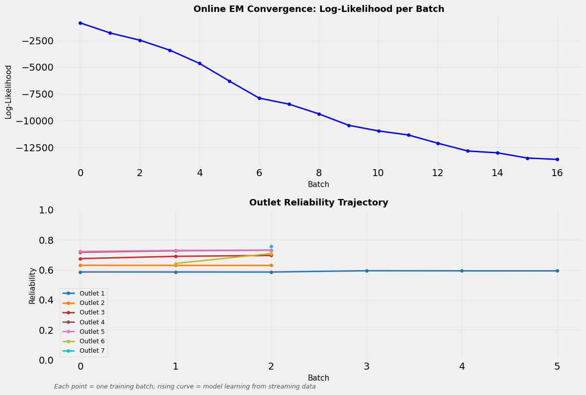
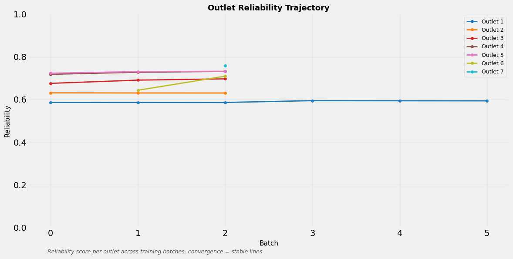

Generated using online Dawid-Skene EM with Robbins-Monro step sizes.
| source / metric | rows | status |
|---|---|---|
| True.csv | 21,417 | complete |
| Fake.csv | 23,481 | complete |
| articles | 42,681 | — |
| outlets | 7 | — |
| events | 24,141 | — |
| claims | 35,564 | — |


Note: This model measures consensus among outlets, not objective truth. Outlets dominating coverage may outrank factual but minority voices. Treat reliability scores as a starting point for investigation, not final verdicts.